대기환경산업기사 (2013-06-02 기출문제)
1과목: 대기오염개론
1. 다음 중 오존파괴지수(ODP)가 가장 큰 것은?
- CCI4
- Halon-1301
- Halon-1211
- Halon-2402
(정답률: 75%)

2. 다음 중 NOx의 피해에 관한 설명으로 가장 적합한 것은?
- 식물에는 별로 심각한 영향을 주지 않으나, 주 지표식물은 아스파라거스, 명아주 등이다.
- 잎가장자리에 주로 흰색 또는 은백색 반점을 유발하고, 인체독성보다 식물의 고목에 민감한 편이다.
- 저항성이 약한 식물로는 담배, 해바라기 등이 있다.
- 스위트피가 주 지표식물이며, 인체독성보다 식물의 고엽, 성숙한 잎에 민감한 편이며, 0.2ppb 정도에서 큰 영향을 미친다.
(정답률: 75%)
3. 대류권내 정상공기의 화학적 조성 분류와 그 조성에 관한 설명으로 옳지 않은 것은?
- Ar은 농도가 안정된 물질에 속하며, 그 농도는 0.934% 정도이다.
- 쉽게 농도가 변하지 않는 물질로서 농도 크기순은 Ne ＞ He ＞ Kr ＞ Xe 이다.
- CH4는 쉽게 농도가 변하지 않는 물질에 해당한다.
- H2는 쉽게 농도가 변하는 물질에 해당하며, 대류권에서의 농도는 10~50ppm 정도이다.
(정답률: 72%)
4. 이산화탄소에 관한 설명으로 가장 거리가 먼 것은?
- 미생물의 분해 작용과 화석연료의 연소 및 산림파괴에 의하여 발생된다.
- 실외에서는 온실가스로 작용하며, 실내에서는 실내공기질 오염의 지표로 삼고 있다.
- 대기 중의 이산화탄소는 봄~여름에 걸쳐 증가하고, 겨울에 감소하는 주된 경향을 보인다.
- 고층대기에서 광화학적인 분해반응을 일으키는 경우를 제외하고는 대류권내에서는 화학적으로 극히 안정한 편이다.
(정답률: 83%)
5. 대기 중 질소산화물에 관한 설명으로 거리가 먼 것은?
- 대기 중 체류시간은 NO와 NO2가 2~5일 정도이다.
- N2O는 대류권에서 태양에너지에 대해 불안정하고, 대류권에서의 체류시간이 짧은 편이다.
- N2O의 발생원으로서는 특히 토양에 공급되는 과잉비료 사용에 의한 것이 문제가 되고 있다.
- 광화학반응과 관련해서는 도시지역의 경우 교통량이 많은 이른 아침시간대에 NO 농도가 매우 높은 편이다.
(정답률: 73%)
6. 오존 파괴와 관련된 특정물질 중 CFC-111 의 화학식으로 옳은 것은?
- CFCI3
- CFCI2
- C2FCI5
- C2F5CI
(정답률: 72%)
7. 대류권에 관한 설명으로 옳지 않은 것은?
- 대류권에서는 평균기온감률이 –6.5℃/km 정도로 감소하므로 기층이 불안정하여 대류현상이 일어나기 쉽다.
- 구름, 비 등의 기상현상은 대류권에 국한된다.
- 대류권의 자유대기는 행성경계층의 상층으로 지표면의 영향을 직접 받지 않는 층이다.
- 행성경계층은 지표면의 마찰 영향을 거의 받지 않으며, 풍속이 지표에서 멀어질수록 약하게 분다.
(정답률: 72%)
8. 대기오염물의 확산모델 중 상자모델(Box Model)의 기본적인 가정에 관한 설명으로 가장 거리가 먼 것은?
- 오염물의 분해는 2차 반응에 의한다.
- 오염원은 방출과 동시에 균등하게 혼합된다.
- 고려되는 공간에서 오염물의 농도는 균일하다.
- 고려되는 공간의 수직단면에 직각방향으로 부는 바람의 속도가 일정하여 환기량이 일정하다.
(정답률: 76%)
9. 가솔린기관의 특성으로 거리가 먼 것은?
- 연료를 공기와 혼합시켜 실린더에 흡입, 압축시킨 후 점화플러그에 의해 강제로 연소 폭발시킨다.
- 정지가동시에는 CO농도가, 가속시에는 NOx가, 감속시에는 HC 농도가 높은 편이다
- 압축비가 0.5~2 정도로 낮고, 연비가 디젤기관에 비해 높다.
- 연소하는 혼합기는 시간적으로 공강적으로 거의 일정한 공연비를 같는다.
(정답률: 62%)
10. 비스코스 섬유제조시 주로 발생하며, 불쾌한 자극성 냄새를 유발하는 액체이며, 끓는점은 약 46℃정도이고, 햇빛에 파괴될 정도로 불안정하지만 부식성은 비교적 약한 대기오염물질은?
- Hydrogen sulfide
- Carbon disulfide
- Formaldehyde
- Bromine
(정답률: 66%)
11. 다음 대기오염물질 중 혈관내 용혈을 일으키며, 3대 증상으로는 복통, 황달, 빈뇨이며, 급성중독일 경우 활성탄과 하제를 투여하고 구토를 유발시켜야 하는 것은?
- 석면
- 비소
- 벤조(a)파이렌
- 불소화합물
(정답률: 83%)
12. 다음 중 강우에 의해 잘 제거되는 오염물질은?
- 구리
- NO2
- NH3
- CO
(정답률: 79%)
13. 다음 중 광부나 석탄연료 배출구 주위에 거주하는 사람들의 폐중 농도가 증대되고, 배설은 주로 신장을 통해 이루어지며, 뼈에 소량 축적될 수 있으며, 만성 폭로시 설태가 끼이며,혈장 콜레스테롤치가 저하될 수 있는 오염물질은?
- 구리
- 카드뮴
- 바나듐
- 비소
(정답률: 82%)
14. 다음은 오존의 생성원에 관한 설명이다. ( )안에 알맞은 것은?
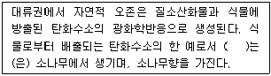
- 사이토카닌
- 에틸렌
- ABA
- 테르펜
(정답률: 73%)
15. 대기 중 환경감률이 –2.5℃/km 인 경우의 대기 상태는?
- 미단열
- 에틸렌
- 과단열
- 역전
(정답률: 76%)
16. 유해가스상 대기오염물질이 식물에 미치는 영향에 관한 설명으로 가장 거리가 먼 것은?
- 고등식물에 대한 피해를 주는 대기오염물질 중에서 독성성분 순으로 나열하면 CI2 ＞ SO2 ＞ HF ＞ O3 ＞ NO2 순이다.
- 이황산가스는 특히 소나무과, 콩과, 맥류 등이 피해를 많이 입는다.
- 황화수소에 강한식물로는 복숭아, 딸기, 사과 등이다.
- 일산화탄소는 식물에는 별로 심각한 영향을 주지 않으나 500ppm 정도에서 토마토 잎에 피해를 나타낸다.
(정답률: 77%)
17. 다음 중 2차 대기오염물질에만 해당하는 것은?
- NaCI, NO2
- NH3, CO
- HC, Pb
- NOCI, H2O2
(정답률: 84%)
18. 오존(O3)에 관한 설명으로 옳지 않은 것은?
- 인체에 마치는 영향으로 유전인자에 변화를 일으키며, 염색체 이상이나 적혈구 노화를 초래한다.
- 2차 대기오염물질에 해당하고, 온실가스로 작용한다.
- 대기 중 오존의 배경농도는 0.01~0.02 ppb으로 알려져 있다.
- 산화력이 강하여 인체의 눈을 자극하고 폐수종 등을 유발시킨다.
(정답률: 84%)
19. 체적이 100m3인 복사실의 공간에서 오존(O3)의 배출량이 분당 0.4mg 인 복사기를 연속 사용하고 있다. 복사기 사용전의 실내오존(O3)의 농도가 0.2ppm라고 할 때 3시간 사용 후 오존농도는 몇 ppb인가? (단, 환기가 되지 않음, 0℃, 1기압 기준으로 하며, 기타 조건은 고려하지 않음)
- 260
- 380
- 420
- 536
(정답률: 63%)
20. 다음 역사적인 대기오염사건 중 methyl iso cyanate가 주된 오염원인 것은?
- Donora 사건
- Meuse valley 사건
- Bhopal 시 사건
- Poza Rica 사건
(정답률: 87%)
2과목: 대기오염 공정시험 기준(방법)
21. 다음은 연료용 유류중의 황함유량을 측정하기 위한 분석방법 중 연소관식 공기법에 관한 설명이다. ( )안에 알맞은 것은?
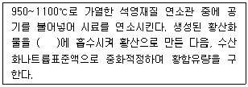
- 과산화수소(3%)
- 질산암모늄용액
- 아연아민착염용액
- 크로모트로핀산용액
(정답률: 74%)
22. 굴뚝 배출가스 중의 불소화합물 분석방법에 관한 설명으로 옳지 않은 것은?
- 질산토륨 – 네온트린법에서는 불소이온을 분리한 다음 pH를 조절, 네온트린을 가하여 흡광도를 측정한다.
- 란탄 – 알리자린 콤플렉손법에서는 흡수액을 희석하여 pH를 조절한 다음 란탄과 알리자린 콤플렉손을 가하여 흡광도를 측정한다.
- 시료채취관은 불소에 부식되지 않는 재질(스텐레스강관등)을 사용한다.
- 배출가스 중의 무기 불소화합물을 불소이온으로 하여 분석한다.
(정답률: 50%)
23. 자외선/가시선 분광법(흡광광도법)의 장치에 관한 설명으로 거리가 먼 것은?
- 자외부의 광원으로는 주로 중수소 방전관을 사용하고, 가시부와 근적외부의 광원으로는 주로 텅스텐램프를 사용한다.
- 측광부에서 광전관, 광전자증배관은 주로 자외 내지 가시파장 범위에서 사용된다.
- 단색화장치로는 프리즘, 회절격자 또는 이 두 가지를 조합시킨 것을 사용한다.
- 광전광도계는 파장선택부에 단색화장치를 사용한 장치로 복광속형이 많다.
(정답률: 37%)
24. 휘발성 유기화합물질(VOC) 누출확인방법에서 사용하는 용어정의에서 “응답시간”은 VOC가 시료채취장치로 들어가 농도 변화를 일으키기 시작하여 기기계기판의 최종값이 얼마를 나타내는데 걸리는 시간을 의미하는가? (단, VOC측정기기 및 관련장비는 사양과 성능기준을 만족한다.)
- 80%
- 85%
- 90%
- 95%
(정답률: 75%)
25. “항량이 될 때까지 건조한다”에서 “향량”의 범위를 벗어나지 않는 것은?
- 검체 8g을 1시간 더 건조하여 무게를 달아 보니 7.9975g 이었다.
- 검체 4g을 1시간 더 건조하여 무게를 달아 보니 3.9989g 이었다.
- 검체 1g을 1시간 더 건조하여 무게를 달아 보니 0.999g 이었다.
- 검체 100g을 1시간 더 건조하여 무게를 달아 보니 99.9g 이었다.
(정답률: 72%)
26. 화학분석일반사항에서 규정한 사항으로 옳지 않은 것은?
- “냉후” (식힌 후)라 표시되어 있을 때는 보온 또는 가열후 실온까지 냉각된 상태를 뜻한다.
- 액의 농도를 (1→2), (1→5) 등으로 표시한 것은 그 용질의 성분이 고체일 때는 1g을, 액체일 때는 1mL를 용매에 녹여 전량을 각각 2mL 또는 5mL로 하는 비율을 뜻한다.
- “약” 이란 그 무게 또는 부피에 대하여 ±10% 이상의 차가 있어서는 안된다.
- 방울수라 함은 10℃에서 정제수 10방울을 떨어뜨릴 때 그 부피가 약 10mL되는 것을 뜻한다.
(정답률: 76%)
27. 이론단수가 1600 인 분리관이 있다. 보유시간이 10분인 피이크의 좌우 변곡점에서 접선이 자르는 바탕선의 길이는? (단, 기록지 이동속도는 5mm/min, 이론단수는 모든 성분에 대하여 같다.)
- 1mm
- 2mm
- 5mm
- 10mm
(정답률: 68%)
28. 금속화합물을 유도결합플라스마 원자발광분광법으로 분석 시 간섭현상에 관한 설명으로 옳지 않은 것은?
- 광학적 간섭은 분석하고자 하는 금속과 근접한 파장에 서 발광하는 물질이 존재하거나, 측정파장의 스펙트럼이 넓어질 때, 이온과 원자의 재결합으로 연속 발광할 때 또는 분자띠 발광 시에 발생할 수 있다.
- 물리적 간섭은 시료의 분무 시 시료의 점도와 표면장력의 변화 등의 매질효과에 의해 발생하며, 이 경우 시료를 희석하거나, 표준물질첨가법을 사용하여 간섭효과를 줄일 수 있다.
- 이온화로 인한 간섭은 분석대상 원소보다 이온화 전압이 더 높은 원소를 첨가하여 간섭효과를 줄이고, 해리하기 어려운 화합물을 생성하는 경우에는 용매첨가법을 사용한다.
- 나트륨, 칼슘, 마그네슘 등과 같은 염의 농도가 높은 시료에서, 절대검정곡선법을 적용할 수 없는 경우에는 표준물질첨가법을 사용한다.
(정답률: 52%)
29. 화학반응 등에 따라 굴뚝 등에서 배출되는 가스중의 염소를 분석하는 방법 중 오르토톨리딘법에 대한 설명으로 옳지 않은 것은?
- 시료중의 염소농도가 10~25ppm 인 것의 분석에 적당하다.
- 시료 채취관의 재질로는 유리관, 석영관, 불소수지관 등을 사용한다.
- 시료 채취관은 굴뚝에 직각이고 끝이 중아부에 오도록 넣는다.
- 오르토톨리딘 염산용액은 갈색병에 보관하며 보관 가능 시간은 약 6개월이다.
(정답률: 53%)
30. 배출가스 내의 휘발성유기화합물질(Volatile Organic Compounds : VOC) 시료채취장치 중 흡착관법에 관한 설명으로 옳지 않은 것은?
- 각 장치의 연결부위는 진공용 그리스를 사용한다.
- 채취관 재질은 유리, 석영, 불소수지 등으로 120℃이상까지 가열이 가능한 것이어야 한다.
- 밸브는 불소수지, 유리, 석영재질로 가스의 누출이 없는 구조이어야 한다.
- 응축기 및 응축수 트랩은 유리재질이어야 한다.
(정답률: 56%)
31. 시험에 사용하는 시약의 농도는 따로 규정이 없는 한 별도 규정된 농도의 것을 사용하는데, 이에 관한 사항으로 옳지 않은 것은?
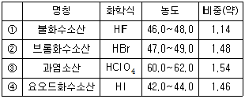
- ①
- ②
- ③
- ④
(정답률: 58%)
32. HCI 배출허용기준이 30ppm인 소각시설에서의 측정결과가 다음과 같았다. 이 때 표준산소농도로 보정한 HCI의 농도는?
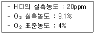
- 14 ppm
- 21 ppm
- 28.6 ppm
- 42.9 ppm
(정답률: 70%)
33. 바분산적외선 분석법을 적용하기 위한 분석계에 관한 설명으로 옳지 않은 것은?
- 적외선 가스분석계는 고정형 분석계와 이동형 분석계로 분류한다.
- 광원은 원칙적으로 니크롬선 또는 탄화규소의 저항체에 전류를 흘러 가열한 것을 사용한다.
- 회전섹타는 시료 광속과 비교 광속을 일정주기로 단속시켜 광학적으로 변조 시키는 것이다.
- 광학필터는 액체필터와 복합형 필터가 있는데 이를 적절히 조합하여 사용한다.
(정답률: 50%)
34. 특정 발생원에서 일정한 굴뚝을 거치지 않고 외부로 비산배출되는 먼지의 측정방법에 관한 설명으로 가장 거리가 먼 것은?
- 시료채취장소는 원칙적으로 측정하려고 하는 발생원의 부지경계선상에 선정하며 풍향을 고려하여 그 발생원의 비산먼지 농도가 가장 높을 것으로 예상되는 지점 3개소 이상을 선정한다.
- 풍속이 0.5m/초 미만 또는 10m/초 이상 되는 시간이 전 채취시간의 50% 이상일 때는 풍속보정계수는 1.2로 한다.
- 전 시료채취 시간 중 주풍향이 변동 없을 때(45°미만)는 풍향보정계수는 1.5로 한다.
- 각 측정지점의 포집먼지량과 풍향풍속의 측정결과로부터 비산먼지농도를 구할 때 대조위치를 선정할 수 없는 경우에는 0.15mg/m3를 대조위치의 먼지농도로 한다.
(정답률: 61%)
35. 굴뚝 배출가스 중 먼지를 수동식 시료채취기를 사용하여 측정 시 시료채취의 등속흡입인정도를 보기 위해 등속흡인계수를 구할 때 다시 시료채취를 하지 않고 인정될 수 있는 등속계수 I(%) 값의 범위기준은? (단,
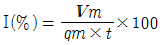
, I : 등속계수(%), Vm : 흡인가스량(습식가스미터에서 읽은 값)(L), qm : 가스미터에 있어서의 등속 흡인유량(L/분), t : 가스 흡인시간(분))- 90% ~ 1⑤%
- 90% ~ 115%
- 95% ~ 115%
- 95% ~ 110%
(정답률: 70%)
36. 굴뚝 배출가스 중의 SO2량이 2286 mg/Sm3일 때, ppm으로 환산한 값은? (단, 표준상태 기준)
- 약 300ppm
- 약 800ppm
- 약 1200ppm
- 약 6530ppm
(정답률: 68%)
37. 다음은 굴뚝 배출가스 중의 황화수소 분석방법에 관한 설명이다. ( )안에 알맞은 것은?
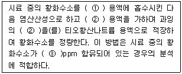
- ① 메틸렌블루우, ② 요오드, ③ 5~1000
- ① 아연아민착염, ② 요오드, ③ 100~2000
- ① 메틸렌블루우, ② 디에틸아민동, ③ 100~2000
- ① 아연아민착염, ② 디에틸아민동, ③ 5~1000
(정답률: 59%)
38. 흡광광도법(Absorptiometric Analysis)에서 램버어트비어(Lambert-Beer) 법칙에 의한 흡광도 A를 구하는 식으로 옳은 것은? (단, 입사광의 강도를 Io, 투사광의 강도를 It 라 한다.)
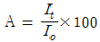
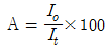
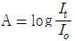
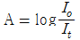
(정답률: 69%)
39. 배출가스 중 납화합물을 자외선/가시선 분광법으로 분석할 때 사용되는 시약 및 용액에 해당하지 않는 것은?
- 디티존
- 클로로폼
- 시안화칼륨용액
- 아세틸아세톤
(정답률: 72%)
40. 굴뚝배출가스의 차압을 경사마노미터로 측정하기 위하여 압력을 걸었더니 경사마노미터 액주의 길이가 10cm 늘어 났다. 이 경우 압력차는 얼마인가? (단, 사용한 봉입액으로 비중 0.85의 톨루엔을 사용하였고, 액주계의 경사각은 수평과 10°를 이루고 있다.)
- 1.0 mmH2O
- 1.50 mmH2O
- 14.76 mmH2O
- 17.99 mmH2O
(정답률: 65%)
3과목: 대기오염방지기술
41. 유체가 원형관 속을 흐를 때 발생되는 압력손실에 영향을 미치는 인자에 관한 설명으로 옳지 않은 것은?
- 관의 길이에 비례한다.
- 관의 직경에 반비례한다.
- 유체의 밀도에 비례한다.
- 유체의 속도의 제곱에 반비례한다.
(정답률: 53%)
42. 황 2kg을 공기중에서 이론적으로 완전연소 시킬 때 발생되는 열량은? (단, 황은 모두 SO2로 전환된다.)
- 1250kcal
- 2500kcal
- 5000kcal
- 8000kcal
(정답률: 58%)
43. 여과집진장치의 특징으로 가장 거리가 먼 것은?
- 다양한 여재의 사용으로 인하여 설계 시 융통성이 있다.
- 여과재의 교환으로 유지비가 고가이다.
- 여과속도는 1~10m/sec 정도이다.
- 압력손실은 100~200mmH2O 정도이다.
(정답률: 53%)
44. 수소가스 3.33Sm3를 완전연소 시키기 위해 필요한 이론공기량(Sm3)은?
- 약 32
- 약 24
- 약 12
- 약 8
(정답률: 62%)
45. 흡착에 관한 다음 설명 중 옳은 것은?(오류 신고가 접수된 문제입니다. 반드시 정답과 해설을 확인하시기 바랍니다.)
- 물리적 흡착에서 흡착물질은 임계온도 이상에서 잘 흡착된다.
- 물리적 흡착량은 온도가 상승하면 줄어든다.
- 물리적 흡착은 흡착과정의 발열량이 화학적 흡착보다 많다.
- 물리적 흡착은 가역성이 낮다.
(정답률: 18%)
46. 굴뚝 배출가스 중 염화수소의 농도는 250ppm이었다. 배출허용기준을 82mg/Sm3이하로 하기 위해서는 현재 값의 몇 % 이하로 하여야 하는가? (단, 표준상태 기준)
- 약 10% 이하
- 약 20% 이하
- 약 40% 이하
- 약 80% 이하
(정답률: 51%)
47. A집진장치의 입구와 출구에서의 먼지 농도가 각각 11mg/Sm3와 0.2×10-3g/Sm3이라면 집진률(%)은?
- 96.2%
- 97.2%
- 98.2%
- 99.4%
(정답률: 63%)
48. 세정식 집진장치의 특성과 가장 거리가 먼 것은?
- 미립자 제거가 가능하고 가스와 입자를 동시에 제거할 수 있다.
- 한 번 제거된 입자는 다시 처리가스 속으로 거의 재비산 되지 않는다.
- 소수성 먼지의 집진효과가 높다.
- 처리가스의 확산이 어렵다.
(정답률: 58%)
49. 다음 중 석탄의 탄화도 증가에 따라 감소되는 것은?
- 고정탄소
- 착화온도
- 휘발분
- 발열량
(정답률: 70%)
50. 탄소 85%, 소수 13%, 황 2% 인 중유를 공기비 1.4로 연소시킬 때 건연고 가스 중의 SO2 부피분율(%)은?
- 약 0.09
- 약 0.18
- 약 0.25
- 약 0.32
(정답률: 43%)
51. 연료의 성질에 관한 설명 중 옳지 않은 것은?
- 휘발분의 조성은 고탄화도 역청탄에서는 탄화수소가스 및 타르 성분이 많아 발열량이 높다.
- 석탄의 탄화도가 저하하면 탄화수소가 감소하며 수분과 이산화탄소가 증가하여 발열량은 낮아진다.
- 고정탄소는 수분과 이산화탄소의 합을 100에서 제외한 값이다.
- 고정탄소와 휘발분의 비를 연료비라 한다.
(정답률: 68%)
52. 다음 중 흡수장치에 관한 설명으로 옳지 않은 것은?
- 충전탑은 포말성 흡수액에도 적응성이 좋으나 충전층의 공극 폐쇄되기 쉬우며, 희석열이 심한 곳에는 부적합하다.
- 분무탑은 가스의 흐름이 균일하지 못하고, 분무액과 가스의 접촉이 균일하지 못하여 효율이 낮은 편이다.
- 벤츄리 스크러버는 압력손실이 높으며, 소형으로 대용량의 가스처리가 가능하고, mist의 발생이 적고, 흡수효율도 낮은 편이다.
- 제트 스크러버는 가스의 저항이 적고, 수량이 많아 동력비가 많이 소요되며, 처리가스량이 많을 때에는 효과가 낮은 편이다.
(정답률: 56%)
53. 질소산화물(NOx)의 억제방법으로 가장 거리가 먼 것은?
- 저산소 연소
- 배출가스 재순환
- 화로내 물 또는 수증기 분무
- 고온영역 생성촉진 및 긴불꽃연소를 통한 화염온도 증가
(정답률: 68%)
54. 평판형 전기집진장치에서 방전극과 집진극과의 거리가 6cm, 배출가스의 유속이 1.5m/sec, 입자가 집진극으로 이동하는 속도(겉보기 이동속도)가 8cm/sec 일 때 이 입자를 100% 제거하기 위한 집진장치의 이론적인 길이는?(단, 층류영역 기준)
- 0.815m
- 0.925m
- 1.125m
- 1.250m
(정답률: 62%)
55. 유해물질 처리방법으로 가장 거리가 먼 것은?
- 불소 : 가성소다에 의한 흡수제거
- 아크로레인 : 염산용액에 의한 흡수제거
- 염화인 : 물에 흡수시켜 제거
- 벤젠 : 촉매연소에 의한 제거
(정답률: 63%)
56. A집진장치에서 처리가스량이 12.000 Sm3/hr, 압력손실이 200mmH2O일 때 효율이 75%인 송풍기를 사용하고자 한다. 이 송풍기의 축동력은?
- 5.2 kW
- 8.7 kW
- 10.8 kW
- 18.3 kW
(정답률: 61%)
57. 먼지의 입경 분포식 R-R[R(%) = 100 exp(-βdpn)]에 관한 설명으로 옳지 않은 것은?(단, n : 입경지수, β : 입경계수)
- 위 식을 Rosin Rammler 식이라 한다.
- 위 식에서 R(%) 은 체상누적분포 (%)를 나타낸다.
- n이 클수록 입경분포 폭은 넓어진다.
- β가 커지면 임의의 누적분포를 갖는 입경 dp는 작아져서 미세한 분진이 많다는 것을 의미한다.
(정답률: 67%)
58. 다음은 송풍기의 유형에 관한 설명이다. ( )안에 가장 적합한 것은?
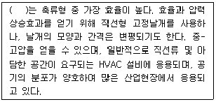
- 원통 축류형 송풍기
- 원심장치 내장형 축류형 송풍기
- 고정날개 축류형 송풍기
- 비행기 날개형 송풍기
(정답률: 69%)
59. packed towr에 관한 설명으로 가장 거리가 먼 것은?
- 원통형의 탑 내에 여러 가지 충전재를 넣어 함진가스(가스 유입속도 1m/sec 이하)와 세정액을 접촉시켜 세정하는 장치이다.
- 1~5μm크기의 입자를 제거할 경우 장치 내 처리가스의 속도는 대략 25cm/sec 이하가 되어야 한다.
- 충전재는 액의 홀드업이 커야 한다.
- 충전재는 내식성이 큰 플라스틱과 같이 가벼운 물질이어야 한다.
(정답률: 63%)
60. 액체연료의 연소방식인 기화 연소방식과 분무화 연소방식에 관한 설명으로 옳지 않은 것은?
- 심지식, 증발식 연소는 기화 연소방식에 해당한다.
- 중발식 연소는 경질유의 연소에 적합하다.
- 충돌 분무화식에서 분무화 입경을 작게 하기 위한 연료 예열온도는 35±5℃정도이다.
- 충돌 분무화식에서 분무화 입경은 연료의 정도와 표면장력이 클수록 커진다.
(정답률: 59%)
4과목: 대기환경 관계 법규
61. 대기환경보전법규상 자동차 운행정지표지에 관한 사항으로 옳지 않은 것은?
- 바탕색은 노란색으로, 문자는 검정색으로 한다.
- 자동차의 전면유리 좌측상단에 붙인다.
- 운행정지표지에는 자동차등록번호, 점검당시, 누적주행거리(km), 운행정지기간, 운행정지기간 중 주차장소 등이 기재된다.
- 운행정지대상 자동차를 운행정지기간 내에 운행하는 경우에는 대기환경보전법상 300만원 이하의 벌금을 물게 된다.
(정답률: 68%)
62. 대기환경보전법령상 사업자 과실로 확정배출량을 잘못 산정하여 제출 후 부과금 납부명령을 받은 사업자가 부과금 조정을 신청할 경우 조정신청기간은 부과금납부통지서를 받은 날부터 얼마이내에 하여야 하는가?
- 7일 이내에 하여야 한다.
- 15일 이내에 하여야 한다.
- 30일 이내에 하여야 한다.
- 60일 이내에 하여야 한다.
(정답률: 54%)
63. 대기환경보전법령상 휘발유 사용 자동차의 제작차 배출허용기준이 설정된 오염물질의 종류에 해당되지 않는 것은?
- 일산화탄소
- 탄화수소
- 질소산화물
- 입자상물질
(정답률: 64%)
64. 대기환경보전법령상 3종 사업장 분류기준으로 옳은 것은?
- 대기오염물질발생량의 합계가 연간 20톤 이상 80톤 미만인 사업장
- 대기오염물질발생량의 합계가 연간 20톤 이상 60톤 미만인 사업장
- 대기오염물질발생량의 합계가 연간 10톤 이상 20톤 미만인 사업장
- 대기오염물질발생량의 합계가 연간 10톤 이상 50톤 미만인 사업장
(정답률: 69%)
65. 대기환경보전법령상 굴뚝 자동측정기기의 부착대상 배출시설, 측정 항목, 부착 면제, 부착 시기 및 부착 유예기준으로 옳지 않은 것은?
- 부착대상시설의 용량은 배출시설 설치허가증 또는 설치 신고증명서의 방지시설의 용량을 기준으로 배출구별로 산정하되, 같은 배출시설의 2개 이상의 배출구를 설치한 경우에는 배출구별로 방지시설의 용량을 합산하는 데, 이 때 방지시설의 용량은 표준이상(0℃, 1기압)로 환산한 값을 적용한다.
- 같은 사업장에 부착대상 배출구가 2개 이상인 경우에는 환경분야 시험검사 등에 간한 법률에 따른환경오염 공정시험기준에 따른 중간자료수집기(FEP)를 부착하여야 한다.
- 소각시설의 경우에는 배출구의 온도와 최종 연소실 출구의 온도를 각각 측정할 수 있도록 온도측정기를 부착하여야 하지만, 최종 연소실 출구의 온도측정기는 폐기물관리법에 따라 온도측정기를 부착한 경우에는 별도로 부착하지 아니하여도 된다.
- 표준산소농도가 적용되는 시설에 대해서는 산소측정기를 부착하지 아니하여도 된다.
(정답률: 67%)
66. 대기환경보전법령상 대기오염 경보단계 중 “중대경보발령“ 시 조치사항만으로 옳게 나열한 것은?
- 자동차 사용의 자제 요청 사업장의 연료사용량 감축 권고
- 주민의 실외활동 및 자동차 사용의 자제 요청
- 자동차 사용의 제한명령 및 사업장의 연료사용량 감축 권고
- 주민의 실외활동 금지 요청, 사업장의 조업시간 단축 명령
(정답률: 66%)
67. 대기환경보전법규상 환경부장관의 인정없이 방지시설을 거치지 아니하고 대기오염물질을 배출할 수 있는 공기조절장치를 설치할 경우의 1차 행정처분기준으로 옳은 것은?
- 경고
- 조업정지 5일
- 조업정지 10일
- 허가취소 또는 폐쇄
(정답률: 50%)
68. 대기환경보전법령상 초과부과금 산정 시 다음 중요염물질 1킬로그램당 부과금액이 가장 큰 것은?
- 황화수소
- 황산화물
- 이황화탄소
- 불소화합물
(정답률: 55%)
69. 대기환경보전법규상 자동차 연료 제조기준 중 벤젠함량(부피%) 기준으로 옳은 것은?(단, 휘발유 연료, 2009년 1월 1일부터 적용)
- 0.7 이하
- 1.0 이하
- 1.0 이상 2.3 이하
- 10 이하
(정답률: 46%)
70. 대기환경보전법규상 시 · 도지사가 설치하는 대기오염 측정망의 종류에 해당하지 않는 것은?
- 도시지역의 대기오염물질 농도를 측정하기 위한 도시대기측정망
- 도시지역의 휘발성유기화합물 등의 농도를 측정하기 위한 광화학대기오염물질측정망
- 대기 중의 중금속 농도를 측정하기 위한 대기중금속측정망
- 도로변의 대기오염물질 농도를 측정하기 위한 도로변대기측정망
(정답률: 59%)
71. 대기환경보전법규상 환경기술인의 보수교육은 신규교육을 받은 날을 기준으로 몇 년마다 받아야 하는가? (단, 규정에 따른 교육기관으로써 정보통신매체를 이용한 원격교육은 제외)
- 1년 마다 1회
- 2년 마다 1회
- 3년 마다 1회
- 5년 마다 1회
(정답률: 65%)
72. 대기환경보전법령상 천재지변으로 사업자의 재산에 중대한 손실이 발생한 경우로서 사업자가 기본부과금 징수유예를 받거나 분할납부를 하고자 할 때, 징수유예기간과 그 기간 중의 분할납부의 횟수기준으로 옳은 것은?
- 유예한 날의 다음 날부터 다음 부과기간의 개시일 전일까지, 4회 이내
- 유예한 날의 다음 날부터 다음 부과기간의 개시일 전일까지, 6회 이내
- 유예한 날의 다음 날부터 1년 이내, 2회 이내
- 유예한 날의 다음 날부터 1년 이내, 6회 이내
(정답률: 54%)
73. 대기환경보전법규상 위임업무 보고사항 중 “배출시설 및 방지시설의 정상운영여부 확인기기 부착업소와 행정처분 현황“의 보고횟수기준은?
- 수시
- 연 4회
- 연 2회
- 연 1회
(정답률: 32%)
74. 대기환경보전법령상 일일초과배출량 및 일일유량의 산정방법에서 일일유량 산정을 위한 측정유량의 단위는?
- m3/sec
- m3/min
- m3/h
- m3/day
(정답률: 72%)
75. 대기환경보전법규상 사업자는 자가측정에 관한 기록을 일정기간동안 보존해야 하는데, 측정시 사용한 여과지 및 시료채취 기록지의 보존기간 기준으로 옳은 것은?(단, 환경분야 시험·검사 등에 관한 법률에 의한 환경오염공정시험기준에 따른다.)
- 측정한 날부터 3개월로 한다.
- 측정한 날부터 6개월로 한다.
- 측정한 날부터 1년으로 한다.
- 측정한 날부터 3년으로 한다.
(정답률: 57%)
76. 대기환경보전법규상 자동차의 종류에 관한 사항으로 옳지 않은 것은? (단, 2009년 1월 1일 이후 적용기준)
- 전기만을 동력으로 사용한 자동차는 1회 충전 주행거리 160km 미만인 것은 제1종으로 분류한다.
- 화물자동차는 엔진배기량이 1,000cc 이상인 밴(VAN)과 덤프트럭·콘크리트믹스트럭 및 콘크리트펌프트럭을 포함한다.
- 이륜자동차는 공차 중량이 0.5톤 미만으로 1명 또는 2명 정도의 사람을 운송하기 적합하게 제작된 것이다.
- 경자동차는 엔진배기량이 1,000cc 미만으로 사람이나 화물을 운송하기 적합하게 제작된 것이다.
(정답률: 55%)
77. 대기환경보전법규상 운행차 배출허용기준 적용으로 옳지 않은 것은?
- 건설기계 중 덤프트럭, 콘크리트믹서트럭, 콘크리트펌프트럭에 대한 배출허용기준은 화물자동차기준을 적용한다.
- 희박연소(Lean Burn)방식을 적용하는 자동차는 공기과잉률 기준을 적용하지 아니한다.
- 휘발유와 가스를 같이 사용하는 자동차의 배출가스 측정 및 배출허용기준은 휘발유의 기준을 적용한다.
- 알코올만 사용하는 자동차는 탄화수소 기준을 적용하지 아니한다.
(정답률: 61%)
78. 대기환경보전법령상 황함유기준에 부적합한 유류회수처리명령을 받은 자는 그 명령을 받은 날부터 이행완료보고서를 최대 며칠이내에 시·도지사에게 제출해야 하는가?
- 5일 이내
- 7일 이내
- 10일 이내
- 30일 이내
(정답률: 32%)
79. 대기환경보전밥상 기후·생태계 변화유발물질에 해당하지않는 것은?
- 수소불화탄소
- 메탄
- 일산화탄소
- 육불화황
(정답률: 57%)
80. 대기환경보전법규상 기본부과금의 농도별 부과계수 산정시 연료의 황함유량이 1.0% 초과하는 경우 농도별 부과계수는? (단, 연료를 연소하여 황산화물을 배출하는 시설로서 황산화물의 배출량을 줄이기 위하여 방지시설을 설치한 경우와 생산공정상 황산화물의 배출량이 줄어든다고 인정하는경우는 제외한다.)
- 0.2
- 0.4
- 0.7
- 1.0
(정답률: 51%)